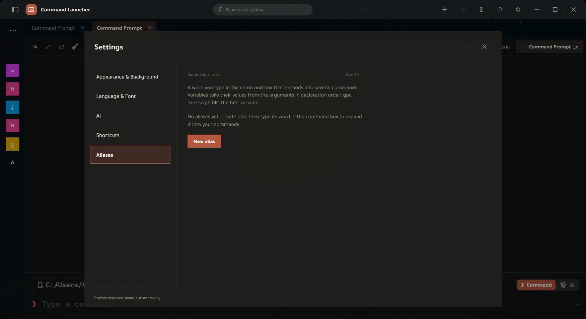
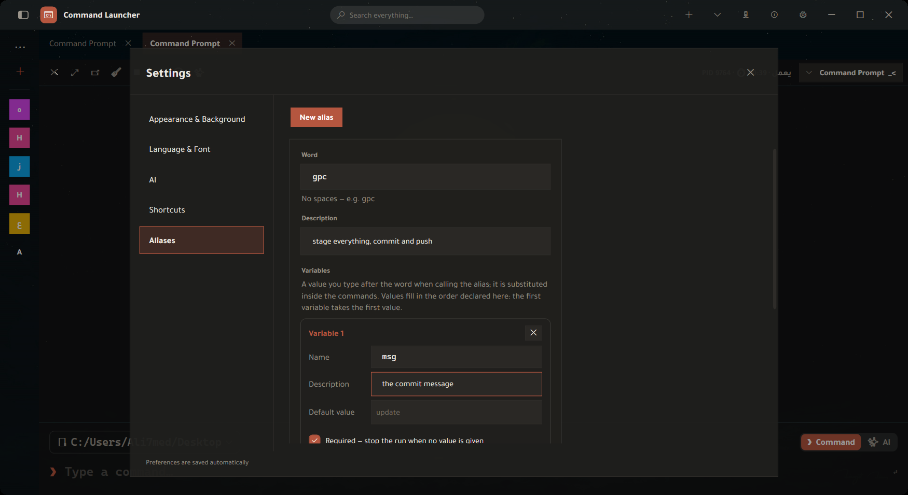
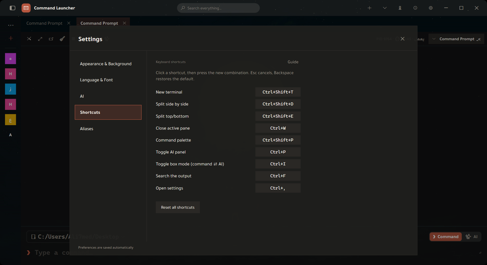

Command Launcher — Guide
Every “Guide” button in the app opens this page at its own section — and from there you browse the rest from the sidebar.
1 · The window at a glance

The window has three areas:
- Title bar — quick search, “+” for a new terminal, the server monitor, the Guide (the pulsing icon), “What's new”, and settings.
- Sidebar — saved commands and projects. Collapses and expands from the menu button at its top.
- Terminal area — tabs and their panes, with the command box underneath.
Nothing needs saving: everything you change in settings is stored automatically and applied immediately.
2 · Terminal & tabs
New tab and splitting
| Ctrl+Shift+T | New tab — starts in the active tab's own folder, following the live cd rather than the start folder. |
| Ctrl+Shift+D | Split vertically — two panes side by side in the same tab. |
| Ctrl+Shift+E | Split horizontally — two panes stacked. |
| Ctrl+W | Close the active pane (not the whole tab when it is split). |
Splits inherit the folder too. And when no terminal is open at all — so there is nothing to inherit — “+” offers start locations: Desktop, Documents, Downloads, your home folder, the fixed drives, and “Browse for a folder…”.
Tab menu (right-click its title)
| Rename | A name describing what you do in it instead of a long path. |
| Duplicate tab | A new tab with the same folder and shell. |
| Detach to its own window | Moves the tab out into its own window — for working across two screens. |
| Open in Explorer | Opens the working directory in Windows Explorer. |
| Copy title · Copy working directory | To the clipboard. |
| Move forward · Move back | Reordering tabs. |
| Close · Close others · Close to the right | Quick cleanup of a long row of tabs. |
Searching the output
Ctrl+F opens a search bar inside the active terminal's output — to find a line in a long dump without scrolling.
Pasting
Pasting multi-line text shows a confirmation with what you are about to paste and how many lines it is, before it reaches the shell. If it contains something that looks like a risky command, the warning is highlighted. The reason: a hidden line inside text copied from the web runs the moment it is pasted, with no chance to review it.
Font size
Ctrl + mouse wheel grows and shrinks the terminal font. The command box follows it (slightly larger, so the input line stays clearer than the output).
3 · The command box
The box under the terminal is not a plain text field — it has two modes and typing assistance.
Two modes: command ⇄ AI
The switch next to the input line (or Ctrl+I) decides where what you type goes: to the shell as a command, or to the assistant as a request in plain language. The mode is per tab — switching it in one tab does not flip the others.
Suggestions as you type
The box suggests what fits your position in the line, and labels each suggestion's kind:
| Command · subcommand · flag | git, then commit, then --amend. |
| Folder · file | From the current working directory. |
| Branch | Git branches in the repository you are standing in. |
| Script | package.json scripts and the like. |
| Process | For commands that take a process name. |
| History | From your previous commands. |
Next to the box: your command history, and a folder browser to cd by clicking instead of typing a path.
4 · Saved commands & projects
Saved commands
The sidebar keeps your recurring commands with their names and tags. Clicking one inserts it into the box, and the search at the top of the sidebar filters the list as you type.
Projects
A project = a folder + a set of quick commands + a colour and a name. “Open project” opens a terminal in its folder. Inside it are ready steps you run by clicking — and “＋ Add the current command from the terminal” captures the last command you typed and adds it to the project without retyping it.
Right-click menu on a project: open in a new tab · copy name · copy path · open in Explorer · duplicate · rename · project colour.
A duplicate command is not added twice: it tells you “the command already exists” instead of letting copies pile up in the list.
5 · Command palette & search
Ctrl+Shift+P opens the command palette: you type and the results are filtered across everything you can do — your saved commands, your projects, and app actions. At the top of the palette is a “Suggested” section for what fits your current context.
The title bar also has a quick search field that reaches the same thing without a shortcut.
6 · Command aliases
An alias is a word you type in the command box that expands into a chain of commands. Instead of typing the same three lines every time, you define them once under one word — and that word can carry a value that changes on every call.
gpc "first commit"
→ git add .
→ git commit -m "first commit"
→ git pushWhere to create one
Settings (Ctrl+,) → Aliases → “New alias”.
Editor fields

| Field | What it is |
|---|---|
| Word | What you type to trigger the expansion. No spaces. Example: gpc. |
| Description | A line to remind you what it does a month from now. Shown in the list under the word. |
| Variables | The values passed at call time. Detailed below. |
| Commands | One command per line, run in order from top to bottom. |
| Target shell | Empty = every shell, or pwsh/bash so it only expands there. Useful because a bash command in PowerShell is a silent mistake. |
| Confirm before running | Shows what will run and waits for your approval. |
| Enabled | Turning it off keeps the alias in the list but stops it expanding — instead of deleting and retyping it. |
Variables — the three fields
Each variable is a card with three fields. Values are filled in the order the variables are declared.
| Field | What you write | Why |
|---|---|---|
| Name | Letters, digits and underscore — e.g. msg |
This is what you write inside the commands, prefixed with $. A line under the card shows the result live: “Write it in the commands as: $msg”. |
| Description | Free text — “the commit message” | Reminds you what it means, and appears in the error message when it is missing. It does not affect execution. |
| Default value | A ready value — “update” | Used when you call the alias without a value. Leave it empty if there is no sensible default. |
| Required | Checkbox | If it is required with no value and no default, the run stops with a message naming the variable. |
Why order matters: values are matched by position, not by name. With two variables
branch then msg, gpc main "fix" gives branch = main
and msg = fix.
How to write them inside commands
$msg | The value of the variable named msg. |
${msg} | The same, with braces separating the name from what follows: ${msg}_v2. |
$1 … $9 | The value at that position whatever the variable is called — or with no variables declared at all. |
$@ | Everything you typed after the word, space separated. |
What is not substituted — on purpose: only a variable you declared is
substituted. Every other $ reaches the shell untouched: $env:PATH,
$PWD and $(git rev-parse HEAD) survive intact. Replacing them with an empty
string would break the command silently.
Quoting
gpc "fix the login bug" → msg = fix the login bug
gpc fix login → msg = fix ($2 = login)Ready-made examples
nb — new branch and push it (variable name, required):
git checkout -b $name
git push -u origin $namedcu — rebuild the project containers (no variables):
docker compose down
docker compose build
docker compose up -dserve — a local server on a port (port, default 8000):
python -m http.server $port7 · Keyboard shortcuts

| Shortcut | Action |
|---|---|
| Ctrl+Shift+T | New terminal tab |
| Ctrl+Shift+D | Split vertically |
| Ctrl+Shift+E | Split horizontally |
| Ctrl+W | Close the active pane |
| Ctrl+Shift+P | Command palette |
| Ctrl+P | Show/hide the AI panel |
| Ctrl+I | Toggle the box: command ⇄ AI |
| Ctrl+F | Search the terminal output |
| Ctrl+, | Open settings |
Changing a shortcut
- Click the shortcut shown next to the action — it turns into “press the combination…”.
- Press the combination you want. It is recorded immediately.
- Esc cancels the capture and keeps the old one. Backspace restores the default.
Conflicts are rejected out loud: if the combination already belongs to another action, it is refused with a message naming the action that owns it — a new shortcut never silently kills an old one.
The “Restore defaults” button at the bottom resets every shortcut at once.
A combination is stored as text joined by +, so the + key itself cannot be assigned — “Ctrl++” would not be readable back.
8 · AI assistant
The assistant has two entrances: a side panel (Ctrl+P) for a long conversation, and AI mode inside the command box (Ctrl+I) for when you want one command run immediately without leaving the terminal.
Connection
| Provider | OpenAI · OpenRouter · Kimi · Z.ai · a custom provider with its own base URL. |
| Key | Stored encrypted with Windows DPAPI under your account — sent only to the provider you chose. |
| Model | The list is typable: type any part of a name to filter it. Changing it from the panel header affects only the current conversation. |
Assistant behaviour
| Creativity | Lower = steadier, more literal answers. For commands, lower is better. |
| Reply length cap | “Automatic” leaves it to the model. Raise it if answers get cut off. |
| Context snippet cap | How much screen output may be attached. Less = more privacy and lower cost. |
| Custom instructions | Added to every conversation: “always use PowerShell”, “explain briefly”. |
| Auto-run | When the reply is a single command, it runs straight away in the terminal. |
| Panel width · chat font size | Two sliders, applied to the open conversation immediately. |
The auto-run fence: risky commands (rm -rf, git reset --hard,
curl | sh, mkfs…) and multi-line blocks never run without your
confirmation, whatever this setting says. The “Send & run” button on code blocks goes
through the same check — there is no side door.
What is sent with your question
Every request from the command box carries: the working directory, the shell name, your last eight commands, and the last failed command (its text, exit code and first error line). The screen output itself is not sent unless you enable “send tab context”. And when a snippet would carry something that looks like a secret, you get a preview telling you how many items were redacted — nothing leaves before you agree.
The panel
| History | Your saved conversations with their dates; open any of them to read the question and its full reply. |
| Code blocks | “Send & run” puts it in the terminal and runs it; “Send only” puts it in the box so you can review it first. |
| Searching indicator | Shown from the moment you send until the first character of the reply. |
When it does not understand you
It does not guess. It replies with a single clarifying question and no command, and the box stays in AI mode with an arrow pointing at where the answer goes. You type the answer and the conversation continues in place, attached to its question.
9 · App memory
A window showing everything the app has learned about your usage — stored on your machine alone, and erasable in one click.
| Your recurring commands | Your command templates, how many times each ran and its success rate. You can pin a template so it is suggested more, or ban it so it disappears. |
| Errors and their fixes | The errors you have hit, the saved solution for each, and how often it recurred. |
| Suggestion log | What the app suggested and your verdict: accepted · rejected · pending. |
| Your profile | A summary of your working habits, attached to assistant requests. It needs a few recurring commands before it forms. |
| Conversations | Saved AI conversations. If saving is off, the tab says so plainly and points you at its switch. |
“Clear everything” deletes the templates and their counters, the errors and their fixes, and the suggestion log. No undo.
10 · Appearance & background
Theme
Pick a theme and it applies immediately, no restart. A curated set is shown first, and “Show all themes” opens the rest. Each theme has a light and a dark mode, plus “Sync light/dark with the system” to follow Windows.
Accent colour and corner radius
The accent colour touches buttons, indicators and links across the whole interface. The corner radius sets how sharp the corners of cards and fields are.
Background
| Theme background | The default — follows the chosen theme. |
| Templates | Ready backgrounds with gradients and depth. |
| Solids · gradients · patterns | Categorised sets to pick from. |
| Custom image | Your own image as the background, with “Remove” to go back. |
| Terminal transparency | How much of the background shows through behind the terminal text. |
Settings also holds the terminal text colour and the terminal font size.
11 · Language & fonts
Language
Arabic or English, applied immediately — including the interface direction (right↔left). Numerals stay Latin either way. This guide follows your language: the “Guide” button opens the matching version.
Fonts
| Terminal font | The terminal text font — picked from the fonts installed on your machine, each name rendered in its own typeface. |
| Interface font | The font for the rest of the app. Emptying the field restores the default. |
| Monospace font | For paths and technical text inside the interface. |
Sizes by role
Every piece of text in the app belongs to a role, and each role has its size. That is what makes growing the font grow everything, instead of growing one label and leaving its neighbour behind.
| Interface text | The base. Every other role derives from it unless you break the link. |
| Menus | Drop-downs and right-click menus. |
| Tables | Rows in long lists and grids. |
| Headings | Window and major section titles. |
| Sub-headings | The smaller titles inside sections. |
| Secondary text | Hints and the descriptions under fields. |
| Fine print | Badges and counters. |
| Technical text | Paths and code blocks inside the interface. |
| Large text | The numbers and icons of empty states. |
| Terminal | The terminal text (Ctrl + wheel changes it too). |
| AI chat | The conversation text in the side panel. |
One slider is usually enough: while “Derive them from the interface text size” is on, moving the interface text size alone grows the whole app consistently. Turn it off to set each role by hand.
Settings editor (JSON)
For fine control: “Settings editor” opens config.json inside the app with
format, validate and save & apply. An error is
reported with its line and column, and saving is blocked while a syntax error stands.
Some system settings (theme/language/background) need a restart, and the editor says so on save.
12 · Server monitor
A tool inside the app that connects to your servers over SSH to show their health, files and containers.
Servers
Add a server, then “Test connection” before relying on it. The list shows the last connection time for each, with: connect · disconnect · reconnect · edit · duplicate · delete.
Tabs
| Dashboard | An overview: host, OS, kernel, CPU, core count, address, uptime, load, memory and the / disk — plus top processes. |
| Disks | Disks and consumed space. |
| Folders | Folder usage as a visual treemap, a tree, and largest files — to find what filled the disk. |
| Files | Browse the server's files: open · edit · download · rename · delete · upload · new folder · “console here”. |
| Containers | Docker containers: search, a name you choose for each container, and “open” to enter the container explorer and browse its files as if it were a machine. |
| Management | Administrative actions on the server. |
Deletion on a server is permanent — there is no recycle bin over SSH. That is why it asks before deleting any file or folder.
13 · What's new & updates
The “What's new” button in the title bar shows the full release history with each version's highlights. It also appears once automatically after every update.
When an update is available, an accent-coloured dot appears on that same button, and clicking it then opens the update dialog instead of the What's-new panel — because that is what you are waiting for at that moment.